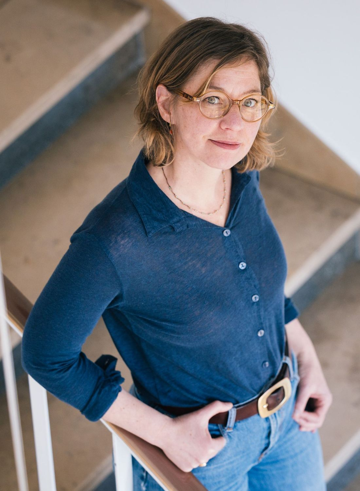

Projekte
Privat


Praxen


Gewerblich


Durch vorherige freiberufliche Tätigkeiten verfüge ich zudem über fundierte Kenntnisse in der Gestaltung von Ferienhäusern, Hotels und Retail Stores.
Durch vorherige freiberufliche Tätigkeiten verfüge ich zudem über fundierte Kenntnisse in der Gestaltung von Ferienhäusern, Hotels und Retail Stores.
Die Planung von Arztpraxen ist eine besondere Herausforderung: Schon am Empfang lassen sich die Einzigartigkeit der Behandlung und das Vertrauen in die Praxis spürbar machen. Akustik, Beleuchtung und eine klare Wegführung erzeugen Sicherheit und Wohlgefühl. Eine durchdachte Planung der Abläufe, Raumaufteilung und des Stauraums wirkt sich direkt auf die Effizienz der Praxis aus.
Büroräume, Konferenzräume, Läden oder Hotels - jeder Betrieb hat seine eigene Sprache und eigene Bedürfnisse. Durch Erfahrung in verschiedenen Schwerpunktbüros und mit meinem Know-how in Architekturpsychologie stelle ich mich auf jedes Themengebiet ein - vom ersten Entwurf bis zur Finalisierung im Detail - für mehr Arbeitseffizienz, Zufriedenheit, Kunden- und Mitarbeiterbindung und eine stimmige Repräsentation.
Küchen sind das Herzstück jeder Fläche, in der Menschen zusammenkommen - ob im privaten Wohnraum, als Büroküche oder in der Gastronomie. Abläufe, Funktionen und Oberflächen werden bis ins kleinste Detail bedacht, ebenso die Orte für das Miteinander sowie das Ambiente mit Beleuchtung und Akustik.
Individuelle Wohnberatung ist eine ganz besondere Herausforderung, denn am Ende soll man sich nachhaltig in den eigenen Räumen wohlfühlen. Kein Katalog kann dabei helfen, denn Bedürfnisse verändern sich mit der Zeit. Ich plane für und mit meinen Kunden - von der Raumaufteilung über die Möbelplanung bis zur Dekoration.
Jedes Café ist ein Unikat. Der Charakter der Räume soll das Konzept, die Individualität der Betreiber und ihre Vorstellungen bzw. das angestrebte CI widerspiegeln - sogar die gewünschte Verweildauer der Gäste lässt sich durch eine subtile Planung steuern. Ich berate Sie auf Wunsch von der ersten Idee bis zur Speisekarte. Auch für eine Wirtschaftlichkeitsanalyse steht mir ein Netzwerkpartner zur Verfügung.
Von der einfachen Beratung über das Erstellen eines Konzeptes und die Ausführungsplanung bis zur Fertigstellung des Umbauprozesses - Sie entscheiden, in welcher Form ich Sie begleite, gerne auch mit meinem Netzwerk aus Handwerk, Herstellern und fachspezifischen Beratern.
So verschieden die Ansprüche sind, im Kern geht es immer um dasselbe: die Optimierung der zur Verfügung stehenden Fläche, der Abläufe und das Wohlbefinden der Menschen, die sich darin aufhalten.
Aspekte wie Akustik- und Lichtplanung, Farbkonzept und Materialwahl, Möblierung und eine intelligente Raumaufteilung haben entscheidenden Einfluss auf die räumliche Atmosphäre sowie die Effizienz von Bewohnerinnen, Klienten, Mitarbeitenden und Patient:innen. Durch meine Projekte habe ich auch im Bereich des barrierefreien Bauens umfassende Erfahrungen sammeln können.
Abgestimmt wird bis ins Detail, damit Ihre Räume Ihre Geschichte erzählen. Sie als Kunde bestimmen, in welcher Form ich Sie ggf. mit meinem Netzwerk unterstützen darf: von einer einfachen Beratung oder dem Erstellen eines Konzeptes über die Ausführungsplanung bis hin zur Fertigstellung des Umbauprozesses.

Arztpraxen · Wohnräume, Bäder & Küchen · Kinderzimmer · Büroräume, Retail & Hotels · Cafés & Gastronomie-Planung
Englisch, Französisch, Spanisch, Niederländisch
CAD-basierte Zeichnungen, 3D-Darstellungen, Modellbau, Image- und Materialcollagen
Verheiratet, drei Kinder
Arztpraxen, Büros und Gewerbeflächen, Küchen, private Wohnräume sowie Cafés und Gastronomie - von einzelnen Räumen bis zur kompletten Fläche.
Am Anfang steht ein unverbindliches Erstgespräch. Danach entscheiden Sie, in welchem Umfang ich Sie begleite: von der Beratung über das Konzept und die Ausführungsplanung bis zur Fertigstellung.
Ja. Sie bestimmen den Umfang - das kann eine einmalige Beratung sein oder die durchgehende Begleitung inklusive meinem Netzwerk aus Handwerk und Herstellern.
Schwerpunkt ist Köln und das Rheinland. Projekte darüber hinaus sind nach Absprache gerne möglich.
Das hängt von Umfang und Leistung ab. Nach dem Erstgespräch erhalten Sie ein transparentes, auf Ihr Projekt abgestimmtes Angebot.
Antwort
Arztpraxen, Büros und Gewerbeflächen, Küchen, private Wohnräume sowie Cafés und Gastronomie - von einzelnen Räumen bis zur kompletten Fläche.
Erzählen Sie mir von Ihrem Projekt. In einem unverbindlichen Erstgespräch klären wir, wie ich Sie unterstützen kann - telefonisch, per E-Mail oder vor Ort.
Jetzt Nachricht schreiben →Ob Arztpraxis, Büro, Küche oder Zuhause - melden Sie sich gerne per Telefon oder E-Mail, ich freue mich auf Ihre Nachricht.